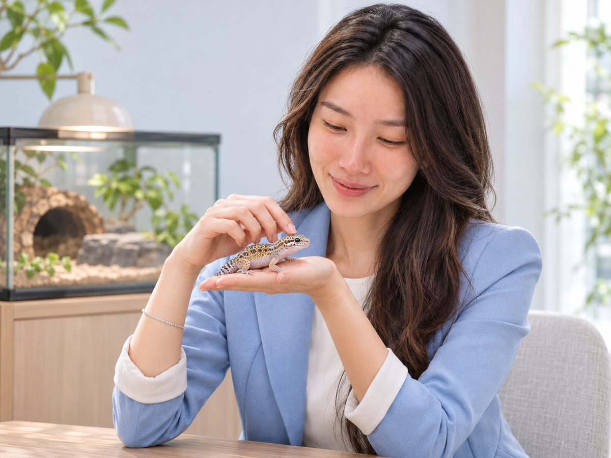

重新設計人生的斜槓女孩
我相信每個人都不只有一種樣子。做喜歡的事、幫身邊的人把生活過得更省心，就是我的工作。
以前的我是一名會計，每天和數字打交道。後來離開職場，我決定不再只選一條路，轉身成為自由工作者，把擅長的事一件件做成服務。
會計背景讓我對數字特別敏感。電信資費看似複雜，但只要把用量、合約和方案攤開來比，往往就能找到更適合、更省的組合，這也是我最常幫大家做的事。
工作之外，我是排球場上的排球少女，也是養了十多年爬爬的爬蟲控。性格從 ISFP 慢慢走成 ENFP，越來越喜歡認識新朋友。
Everything is for the best ✨
- 會計人在數字裡打底，練出精算與細心
- 轉職自由業失業成為轉捩點，開始重新設計人生
- 電信新辦・攜碼・續約諮詢已協助 250+ 人省下電信高額資費
- 整合消費服務保險、日常用品、爬爬照顧等生活大小事
我可以幫你做什麼
一個人搞定生活裡好幾件麻煩事，有問題直接問我就好。
電信新辦・攜碼・續約
想辦新門號、想換電信、合約快到期、覺得月租太貴，或想換新手機，都可以先找我聊聊。我會依照你的實際用量，幫你比較出較適合的選擇。
- 新辦門號
- 攜碼轉換電信
- 門號續約、換購手機
- 資費健檢：看看你是不是付太多
- 全台皆可預約實體辦理，或線上辦理
保險諮詢
有保險相關的問題，歡迎私訊討論。
日常用品購物專家
七年經驗，從居家清潔、保養到生活必需品，幫你挑到好用又划算的東西。

爬爬居家照顧
出遊、出差時家裡的爬爬沒人顧？十多年飼養經驗，到府幫你照顧餵食、環境與溫濕度。
不知道從哪問起？
生活中想省錢、想找人商量的事都可以先丟給我，我會告訴你可以怎麼做。
辦理流程，三步驟就好
不用排隊、不用自己研究一堆方案。
私訊聯絡我
透過 IG 或 Threads 傳訊息，告訴我你的需求、目前方案和合約到期時間。
約定地點或線上辦理
雙北時間約好就能安排面對面；其他縣市提早預約，也可以安排實體辦理。
⚠️ 若擔心個資問題，建議預約實體辦理。
辦理完成
手續完成後，之後有任何使用上的問題，一樣可以隨時找我。
電信續約常見問題
大家最常問我的幾個問題，先幫你整理在這裡。
我的合約還沒到期，可以先續約嗎？
多數情況可以提前續約，但能提前多久、需不需要補差額，會依你目前的方案和合約而不同。把門號的合約狀況傳給我，我幫你確認最適合辦理的時間點。
怎麼查我的合約什麼時候到期？
請自行向你目前使用的電信公司客服查詢，或在該電信的官方 App 中查看。
續約需要準備哪些證件？
本人辦理一般需要「雙證件」：身分證，加上健保卡或駕照其中一種。若由家人代辦，通常還需要代辦人的雙證件與委託書，實際以辦理當下的規定為準。
提前解約的違約金怎麼算？
違約金通常會依合約剩餘的天數等比例遞減，越接近到期日金額越少。實際金額要看你當初申辦的方案與優惠內容，我可以幫你一起試算，再判斷現在辦還是等到期再辦比較划算。
續約可以換成比較便宜的方案嗎？
可以。續約正是重新檢視資費的好時機，很多人其實每月都付了用不到的流量或通話。我會依照你實際的使用量，幫你評估調整後每月可以省多少。
我想換電信公司（攜碼），要注意什麼？
這就是「攜碼」，號碼不變、換電信公司。最重要的是確認原本合約的到期日：若在合約到期前約 28 天內預約，通常可以安排到期後開通，避免違約金。攜碼需要雙證件與電子簽名，必須見面辦理，轉之前先私訊我，幫你抓好時間點。
茶茶的服務範圍在哪裡？
全台灣都可以服務。雙北（台北市、新北市）最容易安排實體辦理；其他縣市只要提早預約、安排好時間，也可以實體辦理。若擔心個資問題，建議預約實體辦理。
一定要見面才能辦嗎？
攜碼一定要見面辦理，因為需要核對雙證件並完成電子簽名。其他服務可以約地點面對面，也可以視情況線上完成。若擔心個資問題，建議預約實體辦理。
以上為一般性說明，實際方案、優惠與規定請以各電信業者官方公告為準。
有問題？直接私訊我
全台皆可預約實體或線上辦理。IG、Threads 回覆最快，也歡迎寫信給我。